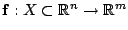
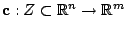
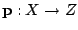
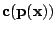
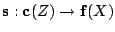
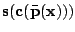
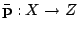
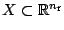
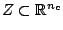
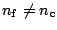

Optimization problems in practice often need cost-function evaluations that are very expensive to compute. Examples are, e.g., optimal design problems based on complex finite element simulations. As a consequence, many optimizations may require very long computing times. The space-mapping (SM) technique [1,2] was developed as an alternative in these situations.
In SM terminology, the accurate but expensive-to-evaluate models are called fine models, . The SM method also needs a second, simpler and cheaper and computationally faster model, the coarse model, , in order to speed-up the optimization process. The key element in this technique is a right-preconditioning for the coarse model, known as the SM function , that aligns the two model responses. The function  corrects the coarse model and can be used as a surrogate for the fine model in the accurate optimization. In most cases the SM function is much simpler than the fine model, in the sense that it is easier to approximate. This fact endows the SM technique with its well-reported efficiency. However, it does not always converge to the right solution.
Defect-correct theory [3] helps to see that, in order to achieve the accurate optimum, the SM function is generally insufficient and also left-preconditioning is needed. In [4] we introduce the mapping  and the associated manifold-mapping (MM) algorithm. MM employs  as the fine model surrogate. Here, the function  is not the above SM function but an arbitrary simple bijection, often the identity. The MM algorithm is as efficient as SM but converges to the accurate optimal solution [4,5].
In the first part of the presentation the MM algorithm will be briefly introduced and a proof of convergence will be given. The use of more than two models (multi-level approach) and the possibility of having a coarse model with a different dimension than the fine one (  and  with ) will be the issues dealt with in the second part of the talk.
[1] J. W. Bandler, R. M. Biernacki, C. H. Chen, P. A. Grobelny and R. H. Hemmers, Space Mapping Technique for Electromagnetic Optimization, IEEE Trans. on Microwave Theory and Techniques, 42(12) (1994) 2536-2544.
[2] J. W. Bandler, Q. S. Cheng, S. A. Dakroury, A. S. Mohamed, M. H. Bakr, K. Madsen and J. Søndergaard, Space Mapping: The State of the Art, IEEE Trans. on Microwave Theory and Techniques 52(1) (2004) 337-361.
[3] K. Böhmer and P. W. Hemker and H. J. Stetter, Defect Correction Methods: Theory and Applications, The defect correction approach, Computing Suppl. 5 1-32, K. Böhmer and H. J. Stetter ed., Springer-Verlag, Berlin, Heidelberg, New York, Tokyo, 1984.
[4] D. Echeverría, and P. W. Hemker, Space mapping and defect correction, Comp. Methods in Appl. Math. 5(2) (2005) 107-136.
[5] D. Echeverría, D. Lahaye, L. Encica, E. A. Lomonova, P. W. Hemker and A. J. A. Vandenput, Manifold-Mapping Optimization Applied to Linear Actuator Design, accepted for publication, IEEE Transactions on Magnetics, 2006.